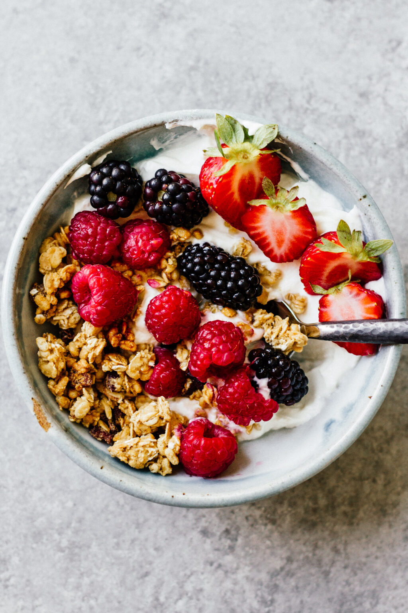

Ingredients
1x serving
▢ 1/2 cup plain greek yogurt
▢ 1/4 cup blueberries
▢ 1/4 cup raspberries
▢ 1/2 cup cantaloupe
▢ 1/2 Tbsp goji berries
▢ 1/2 Tbsp pumpkin seeds
▢ 1/2 Tbsp sliced almonds
▢ 1/2 Tbsp coconut shavings
▢ 1/4 cup granola
US Customary - Metric
Instructions
1- Place the yogurt in a bowl.
2- Add the washed fruit.
3-Top with the seeds, nuts, coconut, and granola.
4- Serve and enjoy!
Nutrition
Serving: 1
Calories: 308 kcal